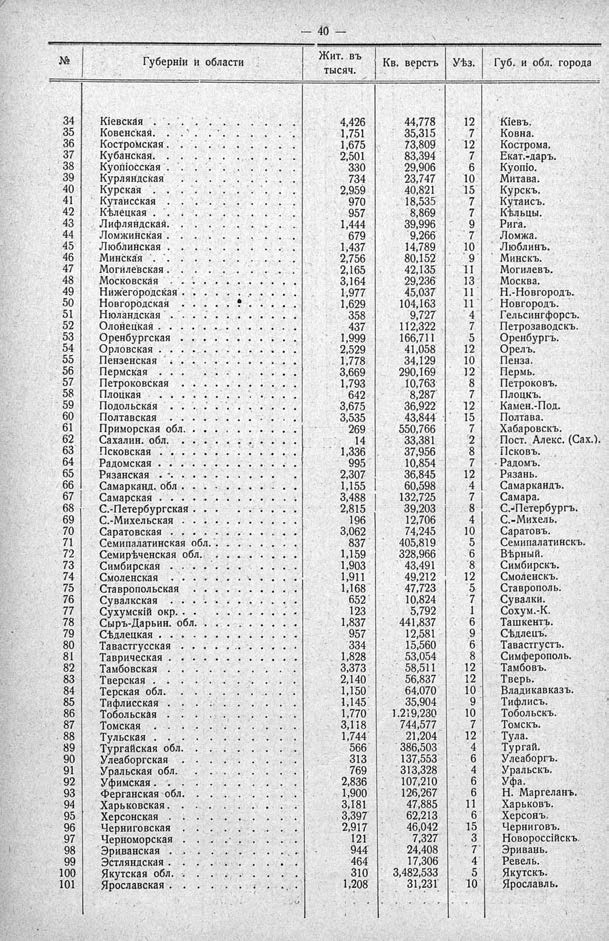

Лист источника 86
Скан

Распознанный текст
— 40 —
№ Губерніи и области Жит. въ тысяч. Кв. верстъ Уѣз. Губ. и обл. города
34 Кіевская . . . . . . . . . . 4,426 44,778 12 Кіевъ.
35 Ковенская. . . . . . . . . . 1,751 35,315 7 Ковна.
36 Костромская . . . . . . . . . 1,675 73,809 12 Кострома.
37 Кубанская. . . . . . . . . . 2,501 83,394 7 Екат.-даръ.
38 Куопіосская . . . . . . . . . 330 29,906 6 Куопіо.
39 Курляндская . . . . . . . . . 734 23,747 10 Митава.
40 Курская . . . . . . . . . . 2,959 40,821 15 Курскъ.
41 Кутаисская . . . . . . . . . 970 18,535 7 Кутаисъ.
42 Кѣлецкая . . . . . . . . . . 957 8,869 7 Кѣльцы.
43 Лифляндская. . . . . . . . . 1,444 39,996 9 Рига.
44 Ломжинская . . . . . . . . . 679 9,266 7 Ломжа.
45 Люблинская . . . . . . . . . 1,437 14,789 10 Люблинъ.
46 Минская . . . . . . . . . . 2,756 80,152 9 Минскъ.
47 Могилевская . . . . . . . . . 2,165 42,135 11 Могилевъ.
48 Московская . . . . . . . . . 3,164 29,236 13 Москва.
49 Нижегородская . . . . . . . . 1,977 45,037 11 Н.-Новгородъ.
50 Новгородская . . . . . . . . 1,629 104,163 11 Новгородъ.
51 Нюландская . . . . . . . . . 358 9,727 4 Гельсингфорсъ.
52 Олонецкая . . . . . . . . . 437 112,322 7 Петрозаводскъ.
53 Оренбургская . . . . . . . . 1,999 166,711 5 Оренбургъ.
54 Орловская . . . . . . . . . . 2,529 41,058 12 Орелъ.
55 Пензенская . . . . . . . . . 1,778 34,129 10 Пенза.
56 Пермская . . . . . . . . . . 3,669 290,169 12 Пермь.
57 Петроковская . . . . . . . . 1,793 10,763 8 Петроковъ.
58 Плоцкая . . . . . . . . . . 642 8,287 7 Плоцкъ.
59 Подольская . . . . . . . . . 3,675 36,922 12 Камен.-Под.
60 Полтавская . . . . . . . . . 3,535 43,844 15 Полтава.
61 Приморская обл. . . . . . . . 269 550,766 7 Хабаровскъ.
62 Сахалин. обл. . . . . . . . . 14 33,381 2 Пост. Алекс. (Сах.).
63 Псковская . . . . . . . . . . 1,336 37,956 8 Псковъ.
64 Радомская . . . . . . . . . . 995 10,854 7 Радомъ.
65 Рязанская . . . . . . . . . 2,307 36,845 12 Рязань.
66 Самарканд. обл . . . . . . . . 1,155 60,598 4 Самаркандъ.
67 Самарская . . . . . . . . . 3,488 132,725 7 Самара.
68 С.-Петербургская . . . . . . . 2,815 39,203 8 С.-Петербургъ.
69 С.-Михельская . . . . . . . 196 12,706 4 С.-Михель.
70 Саратовская . . . . . . . . 3,062 74,245 10 Саратовъ.
71 Семипалатинская обл. . . . . . 837 405,819 5 Семипалатинскъ.
72 Семирѣченская обл. . . . . . . 1,159 328,966 6 Вѣрный.
73 Симбирская . . . . . . . . . 1,903 43,491 8 Симбирскъ.
74 Смоленская . . . . . . . . . 1,911 49,212 12 Смоленскъ.
75 Ставропольская . . . . . . . 1,168 47,723 5 Ставрополь.
76 Сувалкская . . . . . . . . . 652 10,824 7 Сувалки.
77 Сухумскій окр. . . . . . . . . 123 5,792 1 Сохум.-К.
78 Сыръ-Дарьин. обл. . . . . . . 1,837 441,837 6 Ташкентъ.
79 Сѣдлецкая . . . . . . . . . 957 12,581 9 Сѣдлецъ.
80 Тавастгусская . . . . . . . . 334 15,560 6 Тавастгустъ.
81 Таврическая . . . . . . . . 1,828 53,054 8 Симферополь.
82 Тамбовская . . . . . . . . . 3,373 58,511 12 Тамбовъ.
83 Тверская . . . . . . . . . . 2,140 56,837 12 Тверь.
84 Терская обл. . . . . . . . . 1,150 64,070 10 Владикавказъ.
85 Тифлисская . . . . . . . . . 1,145 35,904 9 Тифлисъ.
86 Тобольская . . . . . . . . . 1,770 1.219,230 10 Тобольскъ.
87 Томская . . . . . . . . . . 3,118 744,577 7 Томскъ.
88 Тульская . . . . . . . . . . 1,744 21,204 12 Тула.
89 Тургайская обл. . . . . . . . 566 386,503 4 Тургай.
90 Улеаборгская . . . . . . . . 313 137,553 6 Улеаборгъ.
91 Уральская обл. . . . . . . . 769 313,328 4 Уральскъ.
92 Уфимская . . . . . . . . . . 2,836 107,210 6 Уфа.
93 Ферганская обл. . . . . . . . 1,900 126,267 6 Н. Маргеланъ.
94 Харьковская . . . . . . . . 3,181 47,885 11 Харьковъ.
95 Херсонская . . . . . . . . . 3,397 62,213 6 Херсонъ.
96 Черниговская . . . . . . . . 2,917 46,042 15 Черниговъ.
97 Черноморская . . . . . . . . 121 7,327 3 Новороссійскъ.
98 Эриванская . . . . . . . . . 944 24,408 7 Эривань.
99 Эстляндская . . . . . . . . . 464 17,306 4 Ревель.
100 Якутская обл. . . . . . . . . 310 3,482,533 5 Якутскъ.
101 Ярославская . . . . . . . . 1,208 31,231 10 Ярославль.